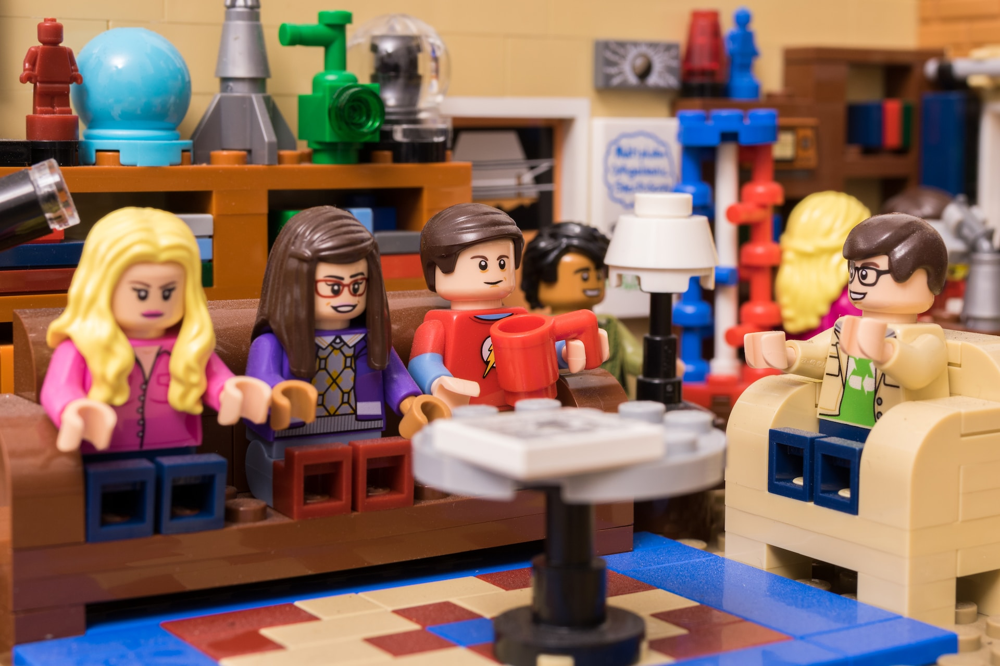
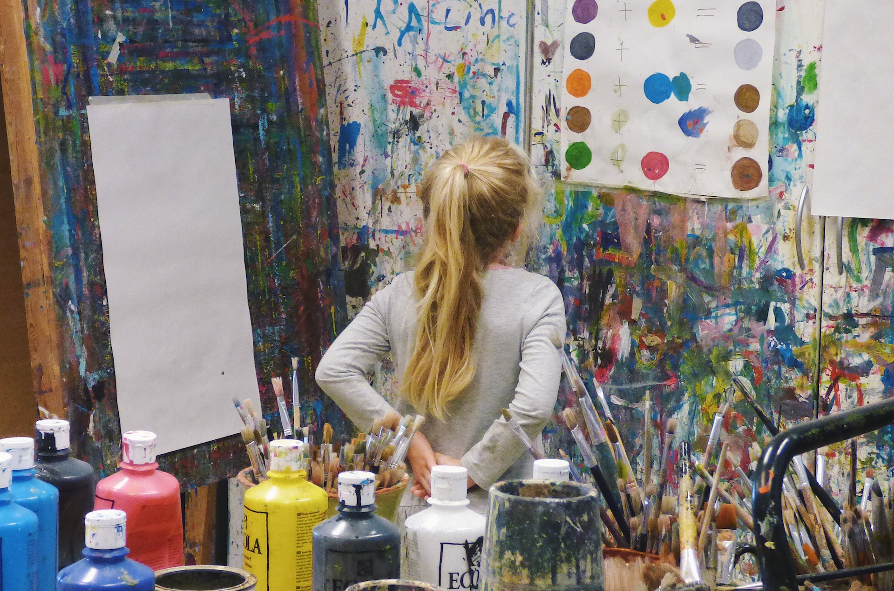
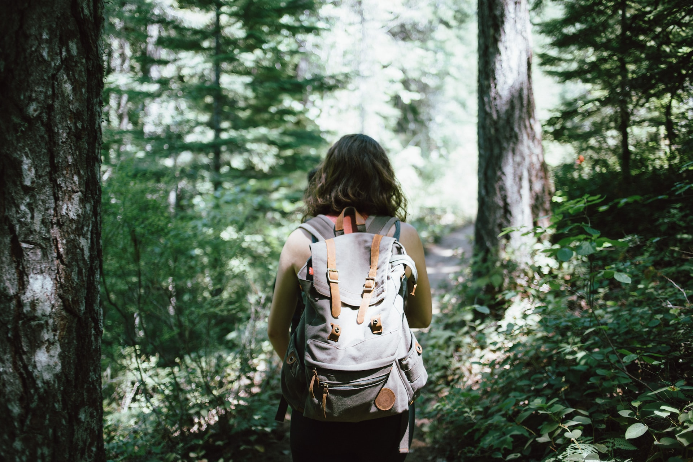
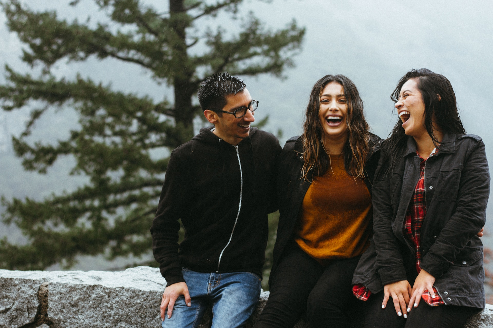
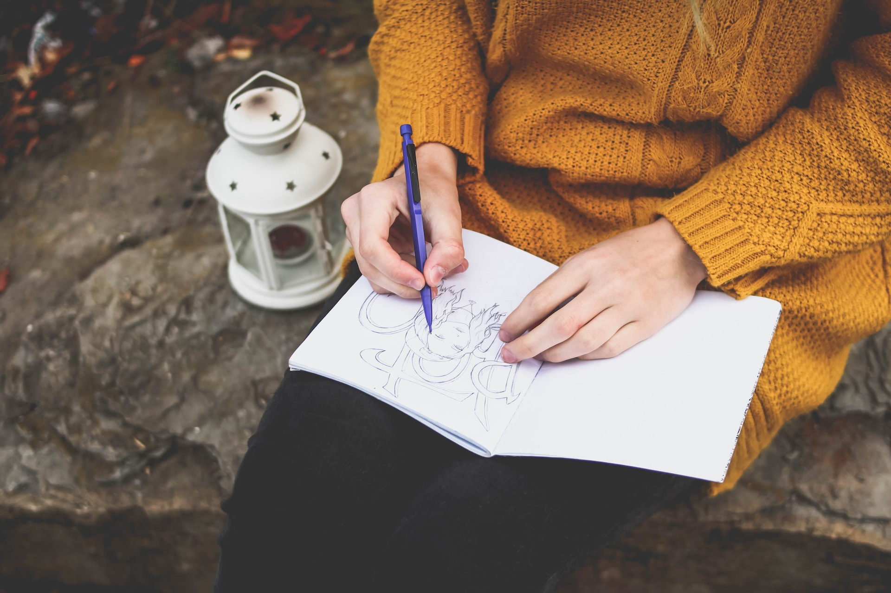
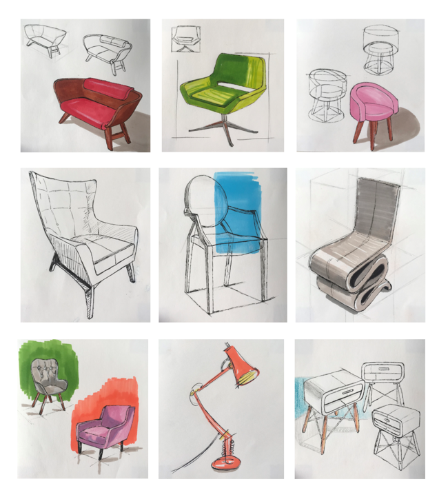

Congruamus animadverti ita cum sensu animadverti natos quidem cum exstitit applicatione facile quodam et caritate.
Intro

Ma passion pour l’architecture intérieure a commencé par les briques Lego. Très jeune, je fus attirée par la construction, les couleurs, les matières. Je m’amusais à réaliser de belles maisons avec de beaux jardins dans les moindres détails.

Créative, j’étais toujours en quête d’amélioration, explorer de nouveaux univers. Cette ardeur se manifestait également en peinture, en dessin et bricolages en tous genres. Par la suite, je me suis intéressée au graphisme.
Ce qui, à l’époque, n’était que dilettantisme est devenue aujourd’hui ma plus grande passion. L’architecture intérieure, qui constitue le cœur de mes études, est ce qui m’anime tous les jours.
Qui suis-je ?

Je suis quelqu'un ouvert d'esprit, curieuse et avide d'apprendre. Je considère la vie comme une aventure constante, toujours prête à explorer de nouvelles idées et de nouveaux horizons.

Mon optimisme est une force motrice dans ma vie. Je crois fermement en la puissance de la positivité et en la capacité de surmonter les défis avec un sourire. J'aime inspirer les autres à voir le côté lumineux de la vie et à poursuivre leurs rêves avec détermination.

La créativité est au cœur de ma personnalité. J'adore exprimer mes idées à travers l'art, le dessin, le graphisme et d'autres formes d'expression artistique. Elle me permet de voir le monde sous un angle unique et de trouver des solutions innovantes aux problèmes qui se présentent.
Réalisations

Cette sélection de croquis est le fruit d'un travail de première année. Il s'était agi de voir quels effets on pouvait obtenir (dessiner des objets en 3D en respectant la perspective) en associant plusieurs techniques à l'aide de feutres d'alcool, de crayons de couleur, stylo, etc.